FTP服务器
Win10搭建FTP服务器
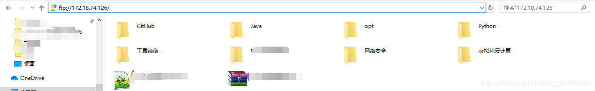开启FTP服务
打开控制面板选中程序,打开启用或关闭Windows功能
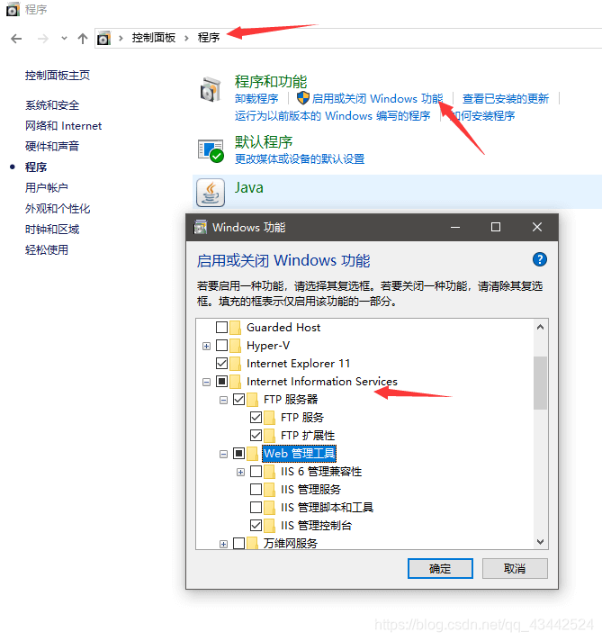IIS配置
windows+q键搜索IIS
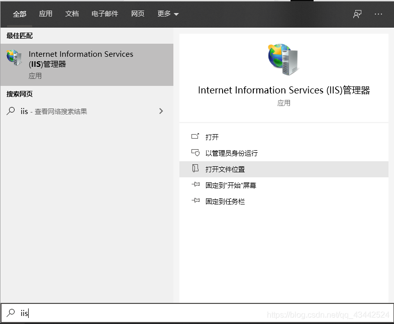右键网站,添加FTP站点
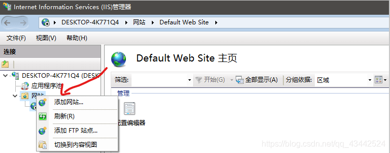输入站点信息
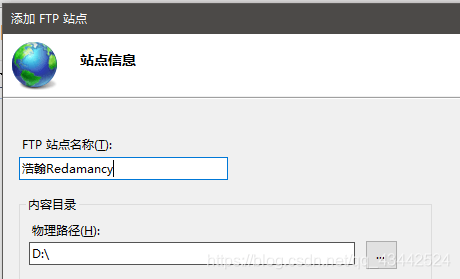输入本机IP地址,注意SSL选中无SSL的选项
 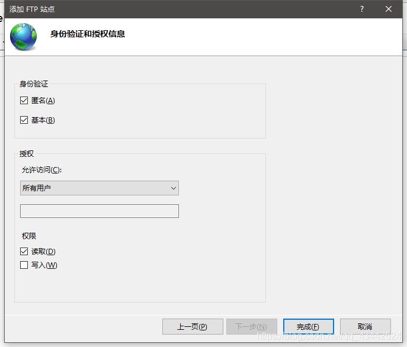
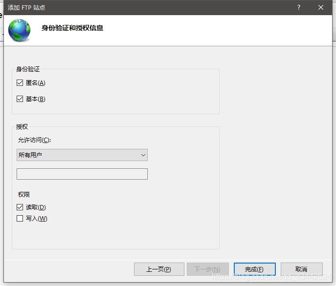
防火墙设置
在控制面板中打开防火墙,选中箭头选项
允许应用通过Windows Defender 防火墙进行通信
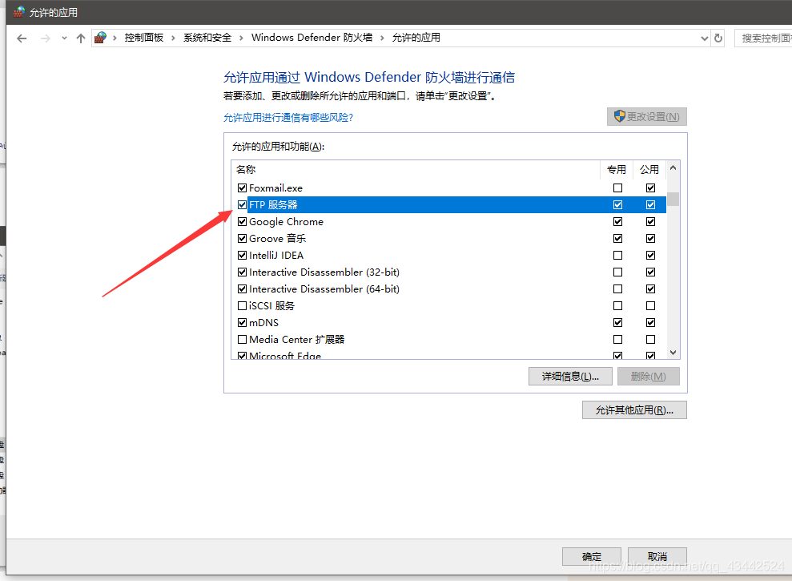允许其他应用
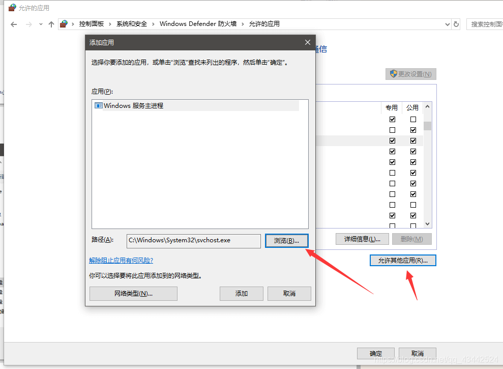 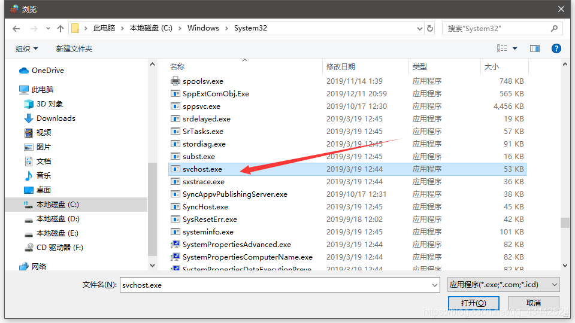查看是否成功
原文链接：https://blog.csdn.net/qq_43442524/article/details/103817226
Q
Windows 无法访问此文件夹。请确保输入的文件名是正确的，并且你有权访问此文件夹。
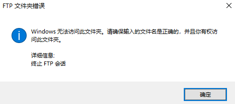(FTP文件夹打开错误，Windows无法访问此文件夹….)解决方法_ftp文件夹错误,windows无法访问此文件夹-CSDN博客